방송통신기사 (2003-03-16 기출문제)
1과목: 디지털 전자회로
1. 1[MHz]을 입력으로 하는 분주 회로에서 출력이 250[KHz]을 가지려면 T Flip-Flop 몇 개가 필요한가?
- 1
- 2
- 3
- 4
(정답률: 알수없음)

2. 다음의 자기 바이어스회로(self-bias)에서 Ic 의 Ico에 대한 안정계수 S의 이론적 최소치는 어느 때인가? (단, 1+β ≫ RB/RE, RB = R1//R2 이다.)
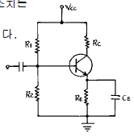
- RB/RE → 100일때
- RB/RE → 0일때
- RB/RE → ∞일때
- RB/RE → 1+β 일때
(정답률: 알수없음)
3. 다음과 같은 회로에 구형파 입력 Vi를 인가 하였을 때 출력파형으로서 타당한 것은? (단, A는 이상적인 연산증 폭기임)
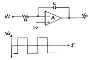
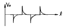
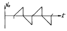
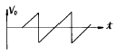
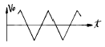
(정답률: 알수없음)
4. 출력전력 100[W]의 반송파를 50[%]변조 하였을 때의 양측 파대의 전력은 몇[W]인가?
- 7.5[W]
- 3.5[W]
- 12.5[W]
- 4.5[W]
(정답률: 알수없음)
5. 다음 연산증폭기 회로에서 입출력 특성은? (단,연산증폭기 A1, A2와 다이오우드 D1, D2는 이상적이다.)
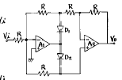
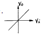
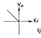
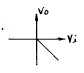
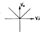
(정답률: 알수없음)
6. 전원의 평활회로에서 쵸크코일입력형에 비해 콘덴서입력형의 장점은?
- 출력직류전압이 크다
- 첨두역전압이 높다
- 대전류에 적합하다
- 전압변동율이 양호하다
(정답률: 알수없음)
7. Base 변조회로(제곱 변조)의 특징이 아닌 것은?
- Base에 반송파와 신호파를 중첩시키는 방식이다.
- 변조 신호 전력이 적다.
- 변조도를 높이면 일그러짐이 크다.
- 피변조파 출력이 크다.
(정답률: 알수없음)
8. 그림과 같은 RC결합 CC증폭기 회로에서 전압이득은 약 얼마인가? (단, 입력저항 Ri = 2⑤[㏀]hie = 1.1[㏀])
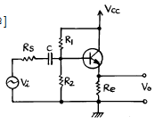
- 51
- 1.3
- 0.995
- 0.699
(정답률: 알수없음)
9. 논리회로를 구성하고자 할 때 IC에 내장되어 있는 AND, OR, NAND, NOR, NOT, X-OR, F/F 등의 논리소자 중에서 선택적으로 퓨즈를 절단하는 방법으로 사용자가 직접 기록(write)할 수 있는 PAL 또는 PLA와 같은 IC는 다음 중 어디에 속하는가?
- PLC
- PLD
- PLL
- RAM
(정답률: 알수없음)
10. 다음 중 발진주파수가 가장 안정적인 발진기는?
- 수정발진기
- 윈브리지발진기
- 이상형발진기
- 음향발진기
(정답률: 알수없음)
11. 두 개의 2진수를 더하기 위한 반가산기(HA)회로는 1개의 X-OR와 1 개의 AND 게이트로 구성된다. 그러면 자리올림이 있는 덧셈에 사용하기 위한 전가산기(FA)의 회로구성은 다음 중 어느 것으로 구성하여야 하는가?
- 2개의 X-OR, 3개의 AND
- 2개의 X-OR, 2개의 AND, 1개의 OR
- 2개의 X-OR, 2개의 OR, 1개의 AND
- 1개의 X-OR, 2개의 AND, 2개의 OR
(정답률: 알수없음)
12. 그림의 회로에서 Vo을 옳게 표현한 것은? (단, K = R2/R1 = Rb/Ra)
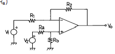
- K(V1 + V2)
- -K(V1 + V2)
- K(V1 - V2)
- -K(V1 - V2)
(정답률: 알수없음)
13. 그림과 같은 스위칭용 슈미트트리거 회로에서 S/W를 OFF 시키면 +5[V]로 충전하기 시작할 때의 시정수는? (단, R1=100[Ω ], R2=10[㏀], C=3.3[㎌])
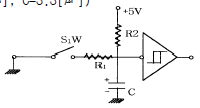
- 0.33〔㎳〕
- 3.3〔㎳〕
- 33〔㎳〕
- 330〔㎳〕
(정답률: 알수없음)
14. AM 변조 방식중 가장 효율이 좋은 방식은?
- 에미터 변조
- 베이스 변조
- 평형변조
- 콜렉터 변조
(정답률: 알수없음)
15. B급 SEPP 출력회로에서 10[W]의 출력으로 16[Ω ]의 스피커를 동작시키고자 한다. 여기에 같은 전원을 2개 사용코자 할 때, 각 1개의 전원 전압은 얼마로 하여야 하는가? (단, 출력의 여유는 25[%]가 있어야 한다.)
- 10[V]
- 20[V]
- 40[V]
- 60[V]
(정답률: 알수없음)
16. 차동증폭기에서 차동신호에 대한 전압이득은 Ad이고 동상신호에 대한 전압이득은 Ac이다. 이때 동상신호 제거비(CMRR)를 옳게 나타낸 식은?
- Ac+Ad/2
- Ad/Ac
- Ac/Ad
- Ac-Ad/2
(정답률: 알수없음)
17. 다음 중 데이터 선택회로라고도 불리우며 여러개의 입력 신호선(채널)중에서 하나를 선택하여 출력선(1개)과 연결하여주는 조합논리회로는 어느 것인가?
- Multiplexer
- Demultiplexer
- Encoder
- Decoder
(정답률: 알수없음)
18. 다음 Karnaugh도를 간략화 한 결과는?
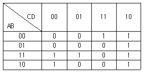
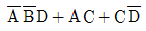
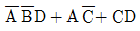
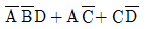
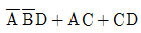
(정답률: 알수없음)
19. MOS 논리회로의 특징이 아닌 것은?
- 높은 입력 임피던스이다.
- 소비전력이 작다.
- 잡음여유도가 크다.
- TTL과의 혼용이 매우 용이하다.
(정답률: 알수없음)
20.
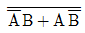
의 논리식을 간략화 하면?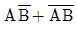
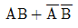
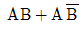
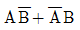
(정답률: 알수없음)
2과목: 방송통신 기기
21. 다음중 연주소 주조정실에 설치되어야 할 방송설비로 적정하지 않는 것은?
- Master Switcher
- Sync Generator
- Multiplexer & Demultiplxer
- Editor
(정답률: 알수없음)
22. TV Camera의 고체 촬상소자로서 현재 가장 많이 사용되는 것은?
- CCD
- Plumbicon
- FED
- PDP
(정답률: 알수없음)
23. 다음중 AM방송의 단점이 아닌 것은?
- 송신소 구축시 중· 단파 안테나의 특성 때문에 넓은 대지 면적이 필요하다.
- 방송의 청취 인구와 운영 효율면에서 송신소 유지비용이 높다.
- 방송망 확장이 적극 진행되지 않아 실질적인 방송 권역이 좁다.
- 표준FM에 밀려 실제 AM방송의 청취자 수가 상당히 많다.
(정답률: 알수없음)
24. 현재 한국에서 방송중인 디지털 텔레비전의 영상 및 음성의 압축방식은?
- MPEG-1, MPEG-2
- MPEG-1, AC-3
- MPEG-2, AC-3
- MPEG-2, MPEG-4
(정답률: 알수없음)
25. NTSC 컬러 TV방식의 매초당 전송하는 프레임 수와 1개 프레임을 구성하는 주사선 수는?
- 60프레임, 525라인
- 30프레임, 525라인
- 50프레임, 625라인
- 25프레임, 625라인
(정답률: 알수없음)
26. MPEG2 video 에서는 3가지 형태의 Frame이 있다. 이 3가지 형태의 Frame은 각각 무엇인가?
- A, B, C
- Y, I, Q
- B, R, Y
- I, B, P
(정답률: 알수없음)
27. FM이나 TV의 Audio를 stereo로 제작하기 위해 장비와 회로를 구성하고 양 채널의 극성을 점검하기 위해 오실로스코프를 사용하여 수직, 수평축에 신호를 인가하였더니 그림과 같은 리사쥬(Lissajous) 도형이 그려졌다. 양 채널의 오디오 위상차는?
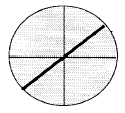
- 0도
- 180도
- 90도
- 270도
(정답률: 알수없음)
28. 위성의 주파수는 이웃하고 있는 나라와 동일 주파수를 사용하고 있을 때, 전파의 효율적인 사용을 위하여 동일주파수에서 혼신 없이 사용하는 방법으로 가장 타당한 것은?
- 주파수 다이버시티를 사용한다.
- 전파의 편파를 달리하여 사용한다.
- 주파수 파장분할 다중방식을 사용한다.
- 주파수 시분할 다중방식을 사용한다.
(정답률: 알수없음)
29. 송신소의 송신기의 출력이 1kw로 송신 되던중 3dB를 낮추어서 송신할 때 전력은 얼마로 낮아지는가?
- 0.1kw
- 0.5Kw
- 1kw
- 2kw
(정답률: 알수없음)
30. 다음 중 중계 프로그램 제작에 사용되는 TV카메라의 기능과 성능의 요구사항이 아닌 것은?
- 소형, 경량일 것
- 내구성, 안정도가 우수하고 주위 온도 및 환경 변화에 강할 것.
- 조작이 용이할 것
- 소비전력이 클것
(정답률: 알수없음)
31. 다음 중 퍼펙TV, 디렉TV저팬, 홍콩스타TV와 관계가 깊은 것은?
- 지상파방송
- 케이블방송
- 직접위성방송
- DAB
(정답률: 알수없음)
32. 다음중 뉴미디어의 특성과 관계가 가장 깊은 것은?
- 적어도 둘 이상의 자료형을 사용해야 한다.
- 하나의 플랫폼에 표현해야 한다.
- 사용자간 상호작용 해야 한다.
- 쌍방 통신에 의해 정보 접근이 용이해야 한다.
(정답률: 알수없음)
33. 54MHz‾50 MHz까지 대역에서 0.75" 케이블의 최고 주파수일때 의 손실이 20dB인 경우 Tilt는 대략 몇 dB인가?
- 18[dB]
- 23[dB]
- 10[dB]
- 13[dB]
(정답률: 알수없음)
34. 방송위성과 통신위성에 대한 설명 중 틀린 것은?
- 방송위성은 출력이 높으나, 통신위성은 출력이 낮다
- 방송 수신주파수가 방송위성은 21-2㎓이나, 통신위성은 11-2㎓ 주파수대역을 사용한다.
- 방송위성은 신호의 세기가 높으나, 통신위성은 낮다.
- 위성에 방송용은 인공위성에 탑재시키는 위성중계기 수량이 적으나, 통신위성은 수량이 많다.
(정답률: 알수없음)
35. 다음중 음성신호에서 PCM 신호를 만드는데 필요하지 않은 것은?
- PAM
- 부호화
- 양자화
- PDM
(정답률: 알수없음)
36. Color TV방송의 수평 동기펄스의 백 포치부에 송신측의 색 부반송파 위상과 수상기에서 재생하는 3.58㎒ 색 부반송파의 위상을 일치시키기 위하여 삽입하는 8∼12 사이클의 신호의 명칭은?
- 컬러 버스트
- 색 부반송파
- 수평동기
- 수직동기
(정답률: 알수없음)
37. 한쪽의 금속판은 고정시키고 또 한쪽의 금속판은 음압의 변동에 따라 진동하도록 만든 마이크는?
- 콘덴서형 마이크
- 무빙코일형 마이크
- 리본형 마이크
- 다이나믹형 마이크
(정답률: 알수없음)
38. 다음중 TV신호 파형을 감시 측정하는데 사용하는 장비는?
- 텔리시네설비(telecinc)
- 파형모니터(Waveform moniter)
- Master moniter
- 컬러엔코더(Color Encoder)
(정답률: 알수없음)
39. 다음중 위성방송 수신기의 기본구성이 아닌것은?
- 수신안테나
- BS컨버터
- BS튜너
- 변조기
(정답률: 알수없음)
40. 옥외에서 2대이상의 카메라를 사용하여 프로그램을 제작할 때 필요한 방송장비는?
- 믹서
- 앵글
- 영상스위쳐
- 디졸브
(정답률: 알수없음)
3과목: 방송미디어 공학
41. 다음 중 양자화(Quantization)에 관한 설명중 틀린 것은?
- 양자화 에러를 줄이기 위해서는 비트 수를 늘여야 한다.
- 비트 수를 증가하면 S/N비는 증가하나, Dynamic Range는 작아진다.
- 데이터 양이 감소하면 양자화 에러는 커진다.
- 양자화란 연속적인 아날로그 값을 이산적인 디지털값으로 표현하는 과정이다.
(정답률: 알수없음)
42. CATV 망을 설계하는데 있어서, 장거리에 걸쳐 분산되어있는 다수의 가입자에게 가장 효율적인 형태는？
- Tree형
- Ring형
- Star형
- Mesh형
(정답률: 알수없음)
43. 영상동기 신호에서 수직 귀선 기간중 펄스의 배열로 맞는 것은?
- EQ 펄스, 수직동기 펄스, EQ 펄스
- EQ 펄스, EQ 펄스, EQ 펄스
- 수직동기 펄스, EQ 펄스, EQ 펄스
- EQ 펄스, EQ 펄스, 수직동기 펄스
(정답률: 알수없음)
44. 다음 중 방송국의 방송 프로그램을 중계ㆍ송신하여 방송국의 전파가 수신되지 않는 난시청지역을 서비스하는 방송국은?
- 연주소
- 송신소
- 중계소
- 이동국
(정답률: 알수없음)
45. 다음 중 디지털 오디오 신호의 S/N비를 정하는 기본적인식은?
- S/N 비 = (6.01* n) + 1.76
- S/N 비 = (6.02 * n) + 1.76
- S/N 비 = (6.03 * n ) + 1.76
- S/N 비 = (6.04 * n) + 1.76
(정답률: 알수없음)
46. 다음 중 다채널다지점분배시스템(MMDS:Multichannel Multipoint Distribution System) 서비스를 할 수 있는 주파수대역으로 올바른 것은?
- 26.7㎓ ‾27.5㎓
- 2.535㎓ ‾2.655㎓
- 552㎒ ‾750㎒
- 450㎒ ‾552㎒
(정답률: 알수없음)
47. 다음 중 방송편성의 정의는?
- 방송의 공적인 발표문
- 마이크로폰을 통해 들어오는 음향의 동시접속
- 기계적, 지술적 소산으로 정신적 창조활동
- 방송 사항의 종류, 내용, 분량 및 그 결정행위
(정답률: 알수없음)
48. 국내 FM방송의 주파수대역은 얼마인가?
- 75MHz∼99MHz
- 80MHz∼100MHz
- 88MHz∼108MHz
- 90MHz∼110MHz
(정답률: 알수없음)
49. 동물의 귀는 2개의 귀를 가지고 있다. 2개가 한조를 이루어 방향감, 원근감을 감지하든지 공간에 퍼지는 것을 느끼는 현상은?
- 양이효과
- 최소가청한
- 청감곡선
- 마스킹현상
(정답률: 알수없음)
50. TV매체의 역사적 변이과정을 제1기에서 제3기로 분류한다면 다음 중 제3기에 해당되지 않는 것은?
- 방송주체 : 일정 규율 속 정보의 자유시장
- 전송수단 : 유한희소
- 재원 : 유료/수신료 + 광고
- 표시수단 : HDTV화 / 다중화 / 이동체화
(정답률: 알수없음)
51. 국내 아날로그 지상파 TV 방송의 영상신호 변조 방식은?
- AM
- FM
- Ring변조
- 위상변조
(정답률: 알수없음)
52. 다음 중 비디오텍스(Videotex)의 특징이 아닌 것은?
- 단방향통신 기능을 갖는 검색, 회화성화상, 정보서비스를 갖는다.
- 대용량의 축적정보를 제공한다.
- 정보단위로 요금이 부가되며 시스템의 개발 비용이 비싸다.
- 시간적인 제한은 없으나 화면의 전송이 느리고 인터페이스가 필요하다.
(정답률: 알수없음)
53. 국내 아날로그 컬러텔레비젼의 영상 주사선과 영상화면의 가로와 세로의 비율이 맞는 것은?
- 영상주사선: 525 라인 영상화면 비율: 4:3
- 영상주사선: 625 라인 영상화면 비율: 16:9
- 영상주사선: 525 라인 영상화면 비율: 16:9
- 영상주사선: 625 라인 영상화면 비율: 4:3
(정답률: 알수없음)
54. 칼라 burst(버스트) 신호의 역할은?
- 포화도 조절
- 색상 조절
- 휘도 조절
- 색위상 동기
(정답률: 알수없음)
55. 현재 디지털 음향분야에서 사용하고 표준 샘플링(Sampling) 주파수가 아닌 것은?
- 32kHz
- 44.1kHz
- 48kHz
- 86kHz
(정답률: 알수없음)
56. 다음의 MPEG-2 데이터 구조 중에서 가장 하위에 해당되는 부호화 단위는?
- 화면
- 슬라이스
- 블록
- GOP
(정답률: 알수없음)
57. 다음 중 오디오와 관계가 깊은 것은?
- SDI(Serial Digital Interface)
- Mixing Console
- Component 신호
- Composite 신호
(정답률: 알수없음)
58. FM 송수신단에서 음성신호를 프리엠퍼시스(pre-emphasis)와 디엠퍼시스(de-emphasis)하는 이유는 무엇인가？
- 선택도를 개선하기 위해
- 고주파 잡음을 감소시키기 위해
- 혼변조를 감소시키기 위해
- 미분이득을 개선하기 위해
(정답률: 알수없음)
59. 뉴미디어계를 크게 세가지로 구분 할 수 있다. 신문. 우편. 잡지 등은 어느 미디어에 속하는가?
- 유선계 미디어
- 패키지 미디어
- 무선계 미디어
- 방송 미디어
(정답률: 알수없음)
60. 다음 중 FM 부가방송 국제표준으로 권고하는 SCA채널을 포함하고 있는 DARC방식의 기저대역 주파수는?
- 53㎑
- 57㎑
- 67㎑
- 76㎑
(정답률: 알수없음)
4과목: 방송통신 시스템
61. 다음 중 디지털 통신시스템을 설계하는 경우 달성하고자 하는 목표가 아닌 것은?
- 최소의 전송 전력
- 최대의 소요 전력
- 최소의 채널 대역폭
- 최대의 데이터 전송율
(정답률: 알수없음)
62. 다음 중 디지털 직접위성방송 시스템에 사용되는 비디오 신호 압축방식의 표준규격은?
- MPEG1
- MPEG7
- MPEG2
- JPEG
(정답률: 알수없음)
63. 다음 중에서 위성방송에 이용하는 Ku대역의 주파수는?
- 상향: 1.6GHz, 하향: 1.5GHz
- 상향: 6GHz, 하향: 4GHz
- 상향: 8GHz, 하향: 7GHz
- 상향: 14GHz, 하향: 12GHz
(정답률: 알수없음)
64. 다음 중 유선방송 시스템에서 헤드엔드 설비의 기능이 아닌 것은?
- 베이스벤드 신호를 RF신호로 변환해 주는 변조 기능
- 다수의 주파수 분할된 신호의 분리 및 혼합기능
- 전송로의 증폭기 상태를 감시하는 기능
- 전송로에 신호를 송출하는 기능
(정답률: 알수없음)
65. NTSC Analog Television에서 색동기신호 주파수로 가장 알맞은 것은?
- 59.94Hz
- 17.7MHz
- 15.74KHz
- 3.58MHz
(정답률: 알수없음)
66. 위성방송용 주파수대역별 용도중 TV방송용 Band가 아닌 것은?
- C Band
- Ku Band
- Ka Band
- S Band
(정답률: 알수없음)
67. 중계소의 위치 선정시 고려대상이 아닌 것은?
- 도로 주변지역 또는 도로개설이 가능한 곳
- 철탑, 통신용 국사 건축에 소요되는 대지 확보가 쉬운 곳
- 인근 지역에 레이더 시설이 없는 곳
- 인근에 호수가 많은 곳
(정답률: 알수없음)
68. 디지털 변조방식인 주파수 천이변조(FSK)에서 주파수 천이변조 신호가 39kHz와 40kHz 방송파로 구성되어 있고 비트율이 3000bps라면, 이 신호의 대역폭은 얼마인가?
- 3 kHz
- 5 kHz
- 7 kHz
- 9 kHz
(정답률: 알수없음)
69. 국내 직접위성방송에서 사용되는 변조방식은?
- QAM
- QPSK
- OFDM
- VSB
(정답률: 알수없음)
70. 다음의 변조방식 중 혼신에 가장 약한 변조방식은?
- QPSK
- 8 PSK
- 16 QAM
- 64 QAM
(정답률: 알수없음)
71. TV 영상신호의 왜곡(Distortion)은 선형(Linear)과 비선형(Non-Linear)의 두 가지 왜곡이 있다. 다음중 선형 왜곡(Linear Distortion)에 속하지 않는 것은?
- 장시간 왜곡(Long Time Distortion)
- 필드 시간 왜곡(Field Time Distortion)
- 색도 대 휘도 이득(Chrominance to Luminance Gain)
- 미분이득(Differential Gain)
(정답률: 알수없음)
72. 진폭변조(AM)와 주파수변조(FM)을 비교 설명한 것 중에서 틀린 것은?
- AM은 FM보다 잡음에 약하다.
- FM은 AM보다 더 넓은 대역폭을 필요로 한다.
- AM의 변복조 회로는 FM보다 복잡하다.
- FM은 AM보다 전송전력을 효율적으로 사용한다.
(정답률: 알수없음)
73. 유선방송망을 구성하는 전송계에서 간선(Trunk Line)에 대한 설명이 아닌 것은?
- 헤드엔드로부터 송출된 신호를 서비스 구역 전역에 전송하기 위한 전송로이다.
- 다른 전송로에 비해 전송거리가 길어지므로 고품질의 전송특성을 갖는 케이블이 필요하다.
- 헤드엔드에서 복수로 시설하거나 또는 도중에서 복수로 분기되기도 한다.
- 송출된 신호를 각 가입자에게 분배하기 위한 전송로이다.
(정답률: 알수없음)
74. 다음 중 지상파 방송망 전송로의 특징으로 가장 알맞는 것은?
- 넓은 지역을 동시에 서비스할 수 있다.
- 강우에 의한 감쇄가 크다.
- 로컬 서비스에 적합하다.
- 간단히 채널배치를 할 수 있다.
(정답률: 알수없음)
75. 다음 CATV 전송로의 기기중 간선에만 사용되는 증폭기로서 전송로의 신호손실을 보상하며 ASC, AGC등의 기능을 가진 고품질의 증폭기는?
- TA( trunk amplifier )
- DA( distribution amplifier )
- EA( extender amplifier )
- SP( splitter )
(정답률: 알수없음)
76. 다음 중 주파수영역 상에서 주로 주파수를 분석하는데 사용되는 측정기는?
- Oscilloscope
- Spectrum Analyzer
- Network Analyzer
- Sweep Generator
(정답률: 알수없음)
77. CATV에 대한 설명으로 관계가 먼 것은?
- 설비나 유지운영에 비용이 발생된다.
- 고층 건물 등에 의한 수신장애가 발생한다.
- 1개의 케이블로 많은 양의 프로그램을 송신할 수 있다.
- 기존 방송을 재송신하거나 스포츠, 쇼핑, 영화, 게임 등과 같은 전문채널을 제공하기도 한다.
(정답률: 알수없음)
78. 수퍼헤테로다인 수신기에 있어서 710 ㎑ 의 전파를 수신할 때 국부발진주파수를 1165 ㎑ 로 하면 영상 주파수는 얼마인가?
- 455㎑
- 910㎑
- 1569㎑
- 1620㎑
(정답률: 알수없음)
79. 다음 중 아날로그 TV 방송방식이 아닌 것은?
- NTSC
- ATSC
- PAL
- SECAM
(정답률: 알수없음)
80. 제한된 용량을 가진 통신자원에 대하여 다수의 독립적인 사용자가 공동의 자원으로 채널을 공유하기 위하여, 방송통신시스템에서 사용중인 다중화의 종류가 아닌 것은?
- 비동기 위상 다중화 (Asynchronous Phase Multiplexing)
- 동기 시분할 다중화 (Synchrnous TDM)
- 비동기 시분할 다중화 (Asynchronous TDM)
- 주파수 분할 다중화 (Frequency Division Multiplexing)
(정답률: 알수없음)
5과목: 전자계산기 일반 및 방송설비기준
81. 방송국 설비공사와 관계가 없는 것은?
- 송출설비
- 방송관리 시스템 설비
- 음향설비
- 통신처리 장치 설비
(정답률: 알수없음)
82. 유선방송국 설비는 매월 방송신호를 측정 시험하여 그 결과를 기록 및 관리해야 하는 사항과 관계가 먼 것은?
- 반사손실
- 스퓨리어스
- 혼변조도
- 반송파의 주파수편차
(정답률: 알수없음)
83. 기억장치로부터 명령이나 데이터를 읽을 때 다음 중 제일 먼저 하는 일은?
- OPERAND 지정
- OPERAND 인출
- 어드레스 지정
- 어드레스 인출
(정답률: 알수없음)
84. 전자계산기의 성능을 표시하는 단위는?
- BPS
- MIS
- MIPS
- TPS
(정답률: 알수없음)
85. 시스템 동작개시후 최초로 주기억장치에 프로그램을 load하는 것은?
- operating system
- bootstrap loader
- loader
- editor
(정답률: 알수없음)
86. 수치 자료 표현 방법에서 부동 소수점 표현(Floating point representation)을 가장 적절하게 설명한 것은?
- 부동 소수점 표현 방법에는 부호부, 가수부로 구분할 수 있다.
- 정밀도가 요구되는 과학 및 공학 또는 수학적인 응용에 주로 사용된다.
- 수를 표현하는 자리수는 고정 소수점에 비하여 적게 든다.
- 수 표현 방법이 고정 소수점에 비하여 간단하다.
(정답률: 알수없음)
87. 4096 × 8 비트의 ROM이 있을 때, 필요한 어드레스(address)핀은 몇 개가 필요한가?
- 10 개
- 11 개
- 12 개
- 13 개
(정답률: 알수없음)
88. 기억장치에 기억되어 있는 정보의 내용 또는 그의 일부에 의해서 기억되어 있는 위치에 접근하여 정보를 읽어내는 장치는?
- 연상기억장치(Associative Memory)
- 가상기억장치(Virtual Memory)
- 캐쉬 메모리(Cache Memory)
- 보조기억장치(Auxiliary Memory)
(정답률: 알수없음)
89. 지상파 방송사업 혹은 위성방송사업 허가시 적용되는 법령은?
- 전파법
- 중계방송사업법
- 한국방송공사법
- 종합유선방송사업법
(정답률: 알수없음)
90. 다음 중 방송국의 허가유효 기간으로 맞는 것은?
- 5년
- 3년
- 2년
- 1년
(정답률: 알수없음)
91. 100MHz‾70MHz대의 주파수를 사용하는 NTSC 아날로그 텔레비전 방송을 행하는 방송국의 주파수 허용편차는 어느 것인가?
- 500Hz
- 1000Hz
- 1500Hz
- 2000Hz
(정답률: 알수없음)
92. 데이터의 표현단위를 비트 수의 크기의 순서로 나열한 것은?
- 비트-니블-바이트-워드-필드-레코드-파일
- 비트-니블-바이트-워드-레코드-필드-파일
- 비트-니블-바이트-워드-레코드-파일-필드
- 비트-니블-바이트-레코드-워드-필드-파일
(정답률: 알수없음)
93. 다음 중에서 코드의 역할이라고 할 수 없는 것은?
- 자료에 대한 분류, 조합
- 실행시간의 단축
- 개개의 데이터를 구분하기가 용이하다.
- 자료처리를 표준화, 단순화하는데 기여한다.
(정답률: 알수없음)
94. 다음 중 MPU (마이크로 프로세서)에서 명령(instruction) 해독을 수행하는 것은?
- 프로그램 카운터(PC)
- 디코더(decoder)
- 엔코더(encoder)
- 명령 레지스터(instruction register)
(정답률: 알수없음)
95. TV채널에서 영상반송파는 채널대역폭의 하측 주파수에서 얼마만큼 떨어져 있는가?
- 0.5㎒
- 0.25㎒
- 1.25㎒
- 4.5㎒
(정답률: 알수없음)
96. 운영체계의 처리방식중 온라인개념으로 데이터의 처리요구가 오면 즉시처리하는 방식은?
- Batch processing
- Time sharing
- spooling
- Real time processing
(정답률: 알수없음)
97. 유선방송을 위한 수신 공중선은 다른 사람의 수신설비 또는 전기통신설비에 장애가 되지 않도록 얼마의 거리 이상 떨어져야 하는가?
- 0.5 [m] 이상
- 1 [m] 이상
- 1.5 [m] 이상
- 2 [m] 이상
(정답률: 알수없음)
98. 방송위원회의 심의 의결사항이 아닌 것은?
- 방송프로그램 및 방송광고의 운용· 편성에 관한 사항
- 방송사업자의 허가· 재허가의 추천, 승인, 등록, 취소 등에 관한 사항
- 전송망사업의 등록 및 변경 등에 관한 사항
- 방송에 관한 관한 연구· 조사 및 지원에 관한 사항
(정답률: 알수없음)
99. 다음 중 청취자에게 음성 기타 음향의 입체감을 주기 위하여 1개의 방송국에서 좌측신호 및 우측신호를 1개의 주파수의 전파로 동시에 전송하는 방송은?
- 스트레오 포닉방송
- 모노 포닉방송
- 초단파 다중방송
- 텔레비전 음성다중방송
(정답률: 알수없음)
100. 자가 유선방송 설비공사는 건축물의 연면적 얼마 이하까지 공사업자외의 자가 시공 할 수가 있는가?
- 100 [m2] 이하
- 500 [m2] 이하
- 1000 [m2] 이하
- 1500 [m2] 이하
(정답률: 알수없음)